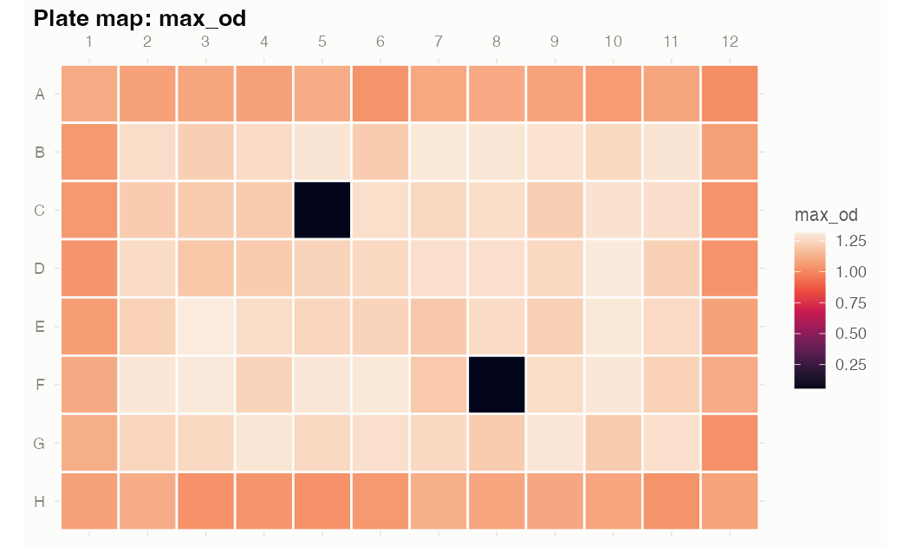
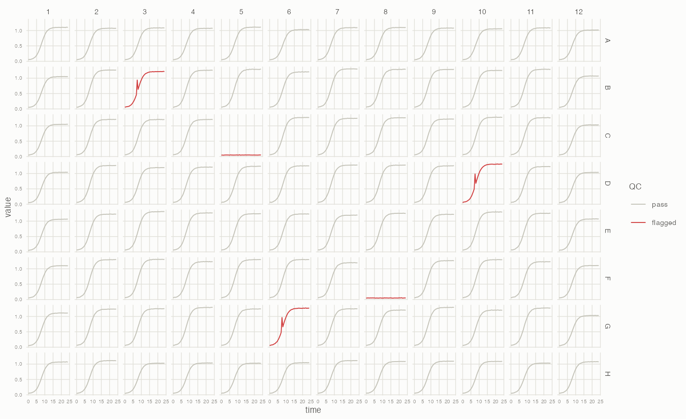
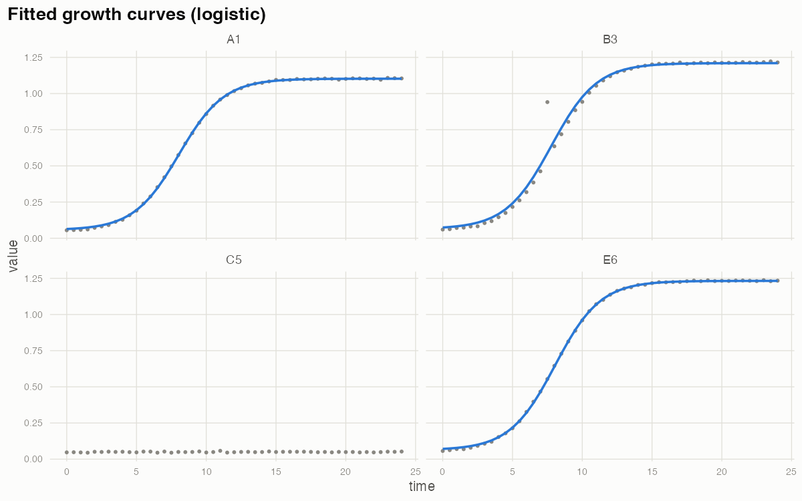
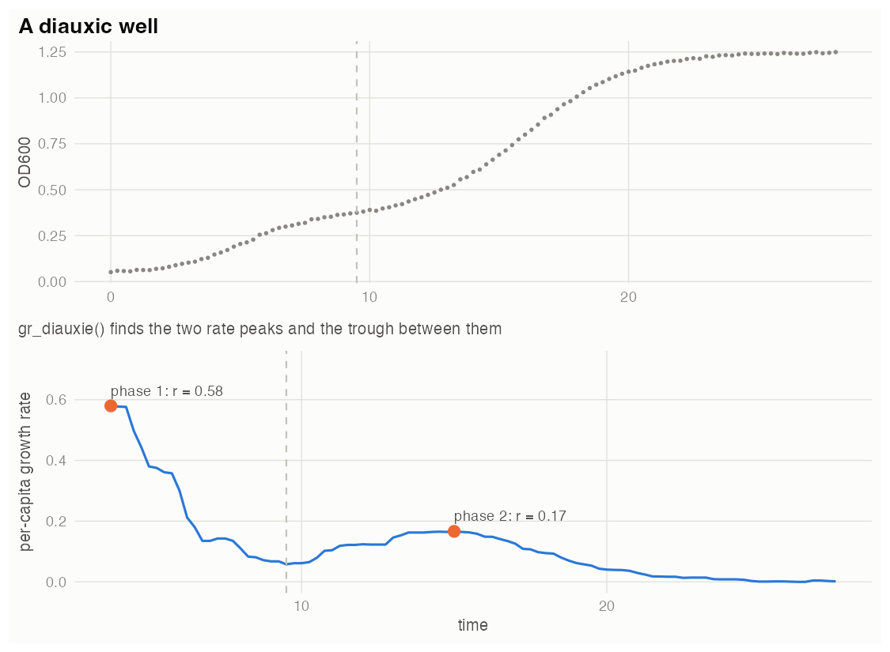
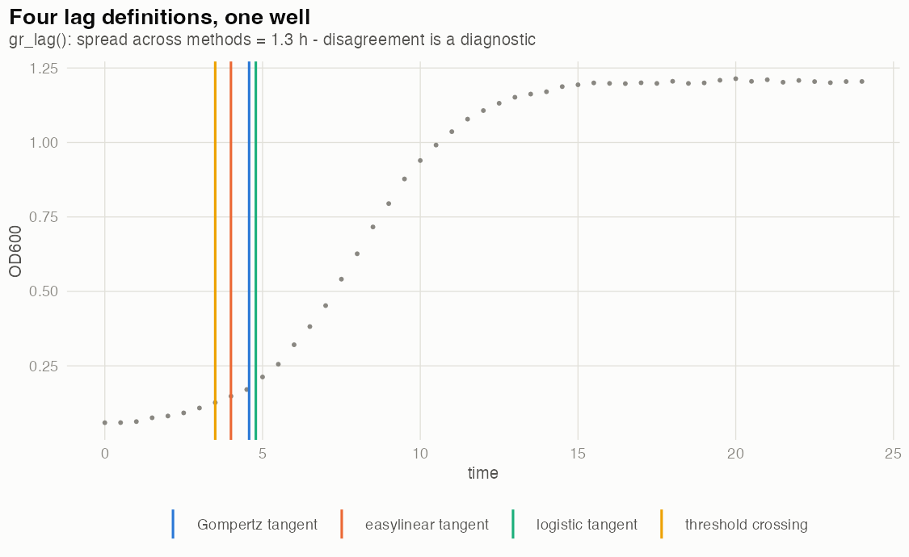
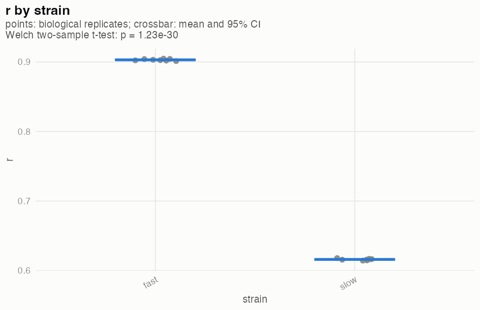
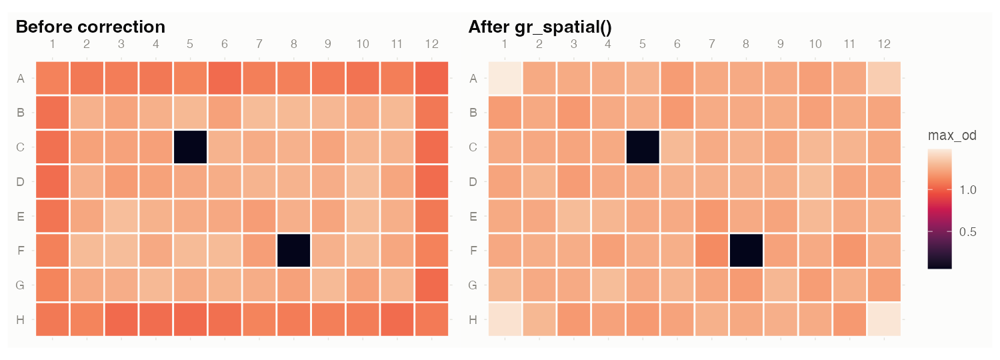

From raw plate reader export to growth rates you can trust.
gRate handles the whole journey for 96-well microbial growth curves: it reads raw exports, maps plate layouts (including biological and technical replicates), flags problematic wells, corrects positional artifacts like edge effects, fits growth models (parametric logistic or nonparametric “easylinear”), and summarises the parameters across replicates. Prefer growthcurver or gcplyr as the fitting engine? gr_export() hands them clean, QC’d data instead.
Why gRate?
Everyone hand-rolls this plumbing: eyeballing 96 curves for condensation spikes, dead wells, and contamination — and pretending the outer ring doesn’t read 15% low. gRate automates the boring, error-prone part with two firm principles:
- Flag, never delete. Every QC decision is recorded per well with its reason; you choose what to drop, and only at export.
- Every threshold is an argument. Sensible defaults for OD600 curves, nothing hard-coded.
The pipeline
Six verbs on one object:
library(gRate)
gr_read("run1.csv") |> # wide or long export -> gr_plate
gr_layout("layout.csv") |> # strain/medium + bio/tech replicates
gr_qc() |> # flag bad wells (never delete)
gr_spatial() |> # correct edge effects (experimental)
gr_fit() |> # logistic or easylinear growth fits
gr_fit_summary() # r, K, lag +- SD across replicatesEvery function takes and returns a single gr_plate object ($data, $qc, $meta), so steps can be reordered, skipped, or inspected at any point:
<gr_plate> 96 wells x 49 timepoints
time: 0 to 24 (interval 0.5)
metadata: strain, medium, bio_rep, tech_rep
replicates: 4 biological x 2 technical
QC: 5 flagged wells (no_growth: 2, spike: 3)
spatial: corrected (stat: max_od)
fit: logistic (94/96 wells), median r = 0.615See your plate
All plots are ggplot2 objects — restyle, retheme, or ggsave() them like any other. The plate map makes spatial trouble obvious at a glance (note the dim outer ring and the two dead wells):
gr_plot_plate(plate, "max_od")
And every curve in its physical position, flagged wells highlighted:
gr_plot_curves(plate)
What gets flagged
| Flag | Catches |
|---|---|
no_growth |
empty or dead wells |
spike |
condensation, bubbles, single-read glitches |
drift |
linear baseline drift with no sigmoid shape |
late_jump |
contamination-like sudden late rise |
noisy |
erratic reads (robust loess residual spread) |
gr_plot_plate(plate, "flagged")
subset(plate$qc, flagged)
#> well reasons
#> B3 spike
#> C5 no_growth
#> ...Replicates
gr_layout() understands biological (bio_rep) and technical (tech_rep) replicates — either name the columns that way in your layout, or designate any column:
gr_layout(plate, "layout.csv", bio_rep = "culture", tech_rep = "tech_well")Technical replicates can be averaged at export, optionally after dropping flagged wells so only clean curves enter the mean:
gr_export(plate, collapse_tech = TRUE, drop_flagged = TRUE)Estimate growth rates
gr_fit() fits every well — QC-aware, on spatially corrected values — with your choice of engine: parametric logistic or Gompertz models (nls) returning growth rate r, carrying capacity K, lag and doubling time; the nonparametric easylinear method (Hall et al. 2014) — rolling regressions on log OD whose steepest R²-filtered window gives the maximum per-capita growth rate; or method = "compare", which fits logistic and Gompertz to every well and keeps the lower-AIC model with its margin (delta_aic) — honest model selection in a tidy output. Wells that cannot be fitted get fit_ok = FALSE and a note, never an error. Add boot = 200 for bootstrap confidence intervals on r (and K) per well.

gr_diauxie() detects multi-phase (diauxic) growth automatically: separate peaks in the rolling per-capita rate profile, with per-phase rates, shift time, and honest NAs where nothing can be estimated.

gr_lag() treats lag time with the honesty it needs: it computes four definitions per well (logistic/Gompertz/easylinear tangents, threshold crossing) and reports their agreement — disagreement is itself a diagnostic.

gr_results() gives you the table to carry into your analysis — one row per well with your metadata, the parameters you care about, and the QC verdict side by side (or straight to CSV with file = "..."):
gr_results(plate, params = c("r", "K", "lag"), drop_flagged = TRUE)
#> well strain medium bio_rep tech_rep r K lag fit_ok
#> A1 strain_1 LB 1 1 0.615 1.10 4.78 TRUE
#> A2 strain_1 LB 1 2 0.618 1.12 4.81 TRUE
#> ...gr_fit_summary() then does the step most fitting tools leave to you: averaging parameters over technical and biological replicates after excluding flagged wells and failed fits:
gr_fit_summary(plate)
#> strain medium n_wells r_mean r_sd K_mean K_sd ...
#> strain_1 LB 8 0.62 0.011 1.19 0.028
#> strain_2 LB 7 0.61 0.013 1.18 0.031Compare strains or conditions
gr_compare() tests whether r (or K, lag, …) differs between groups — at the right unit of replication. Technical replicates are averaged into their biological replicate before any test, so wells never inflate the sample size (the pseudoreplication trap). Welch t-test / ANOVA with Holm-adjusted pairwise comparisons, or Kruskal-Wallis; gr_plot_compare() draws replicate points with group means and CIs.
cmp <- gr_compare(plate, what = "r", by = "strain")
cmp
#> <gr_compare> r by strain (unit: biological replicates)
#> Welch two-sample t-test: statistic = 38.3, p = 1.5e-16
#> ...
gr_plot_compare(cmp)
Edge-effect correction
gr_spatial() estimates row and column effects on max OD (or AUC) with Tukey’s median polish and divides each curve by its bias factor. Flagged wells are excluded from the estimation but still corrected; raw values are kept in value_raw.

It is deliberately simple and clearly labeled experimental — median polish captures row/column trends but corrects corner wells twice over (you can see it in the corners above) — and no correction rescues a design that confounds treatment with plate position. Randomise your layouts.
Prefer another fitting engine?
as_growthcurver(plate, drop_flagged = TRUE) # wide: time + one column per well
as_gcplyr(plate) # long: Well / Time / Measurements
gr_export(plate) # tidy tibble with QC + metadataOne-call Quarto report
gr_report(plate, file = "run1_qc.html")renders a bundled Quarto (.qmd) template into a single self-contained HTML file — plate maps, flagged wells with reasons, the thresholds used, all curves, growth parameters, and spatial effects — for keeping alongside the raw export. Needs the Quarto CLI (bundled with recent RStudio). Add interactive = TRUE for zoomable, hoverable plotly figures (hover a curve to see its well) and a searchable per-well results table.
Related packages
Several good R packages analyse microbial growth curves; they differ in what they fit and in how much of the surrounding workflow they cover:
| Package | Approach | Scope |
|---|---|---|
| growthcurver | Logistic nls fit per well |
Fitting only; wide-format input, no QC or layout handling |
| gcplyr | Tidy data wrangling + model-free per-capita derivatives | Flexible building blocks; you assemble the pipeline (incl. manual diauxie analysis) yourself |
| growthrates | Multiple parametric models + an easylinear implementation | Fitting engines; no QC, layout, or plate-level tooling |
| ipolygrowth | Fourth-degree polynomial via OLS, parameters from derivatives | Avoids nls convergence issues; replicates organized in one table |
| QurvE | Multi-model growth/fluorescence analysis with a GUI | Broad scope incl. dose-response; GUI-centric workflow |
gRate’s focus is the parts these leave out: automated per-well QC flagging, spatial/edge-effect correction, replicate-aware statistics (pseudoreplication-safe comparisons, technical-replicate averaging), honest model selection (AIC + bootstrap CIs), diauxie detection, multi-method lag agreement, and a one-call Quarto report — while gr_export() / as_growthcurver() / as_gcplyr() hand clean data to any of the above if you prefer their fitting engines. Convergence-robust rate estimation is covered by gr_fit(method = "easylinear") (rolling OLS, no nls), with graceful fit_ok = FALSE notes where parametric fits fail.
Status & roadmap
- Generic wide/long CSV/TSV/Excel parsers, QC flags, ggplot2 plate/curve plots, replicate handling, median-polish spatial correction, logistic and easylinear growth fitting with replicate summaries, exporters, and the Quarto report: done, with
R CMD checkclean and a synthetic-plate test suite that recovers every injected artifact and the true growth parameters. - Tecan and BioTek native parsers: planned — they will be written against real example exports, not guessed formats. If you can share an export file, please open an issue.
- 384-well support: out of scope for now (the design leaves room for it).
See vignette("gRate") for the full walkthrough on the bundled example data.